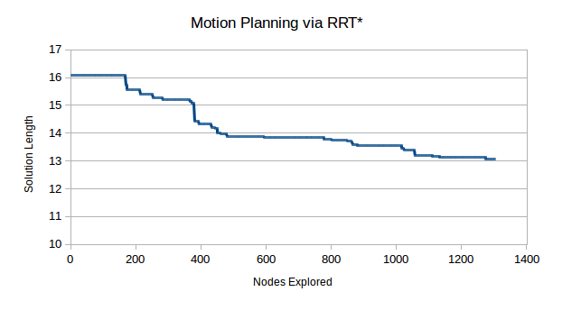

Anytime RRT*
This project is an implementation of the Rapidly Exploring Random Tree (RRT*) algorithm as an Anytime Algorithm, where we give the algorithm a set time to come up with the best solution possible. This RRT* was written in C++ and was given with various amounts of set times to generate the best solution it could under the constraint.

Above is one visualization of this RRT* algorithm running and rewiring nodes to optimize the solution length. The tree is marked by green lines and the optimal motion trajectory is marked by a black line.
The Rapidly-Exploring Random Tree (RRT) is a motion planning algorithm for agents within continuous environments. RRT* makes optimizations to reduce the solution distance by rewiring samples based on depth. This project implements RRT* as an anytime algorithm, visualizes the development of the exploration tree, and evaluates the quality of solutions with respect to the amount of time the algorithm has to compute.
Simple RRT selects random samples from within the environment and connects them to the nearest previously existing node in the explored tree. Following an RRT, you are guaranteed to generate a solution path to the goal, given that a possible path exists and the algorithm has enough time to generate the random samples needed. However, many of the solutions may be deemed to costly or illogical for real world applications. The RRT algorithm is complete when it finds a path to its goal.
RRT* seeks to improve the optimality of the solutions generated by using a different strategy to connect nodes, as well as an additional procedure to reorganize existing nodes. RRT* connects newly sampled nodes not simply to their nearest neighbor, but to their neighbor of least cost from the root node, defined as the sum of euclidean distances of all nodes on the path from root to the current node. RRT* then rewires nodes neighboring the newly added node within a given radius to optimize on the total depth from root node, considering the newly added node as their new parent.
An Anytime algorithm is an algorithm that generates a solution to a problem but continues to optimize the solution until it is interrupted. RRT* is a natural fit to be implemented as an anytime algorithm because it can find and initial solution and continue to sample nodes and rewire until it converges on an optimal solution.
Below is a graph showing the relationship between the length of the solution vs time given to calculate, in the example previously shown.
